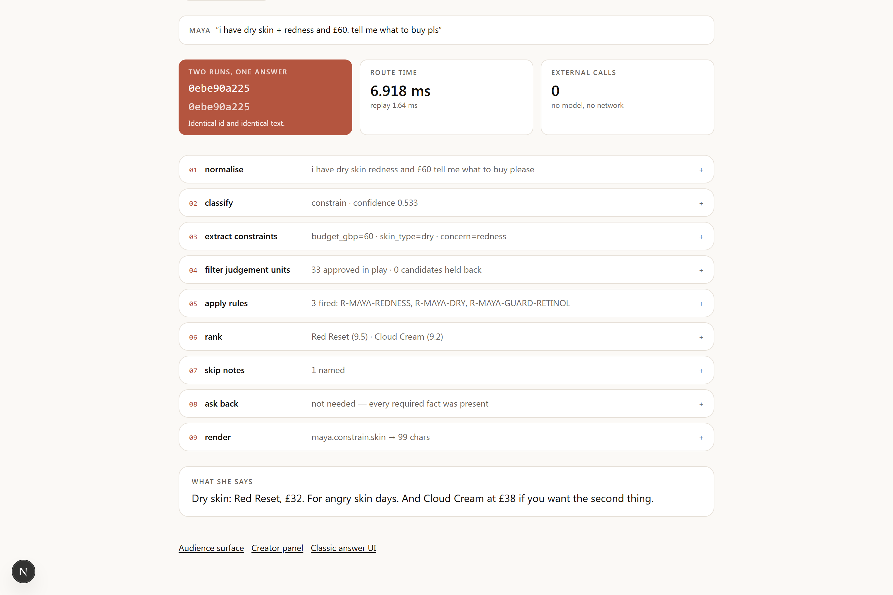
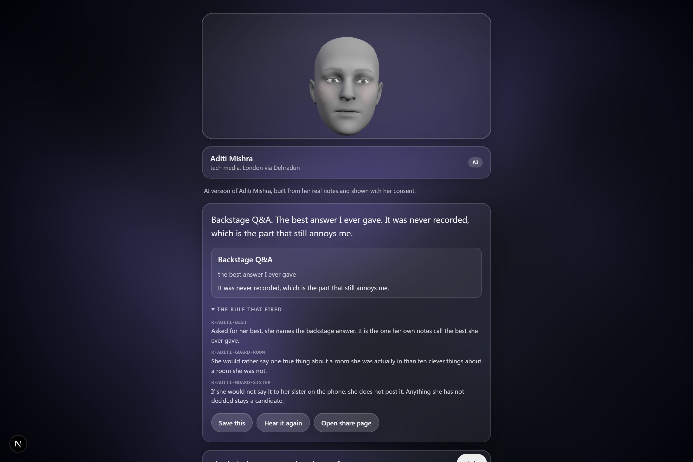
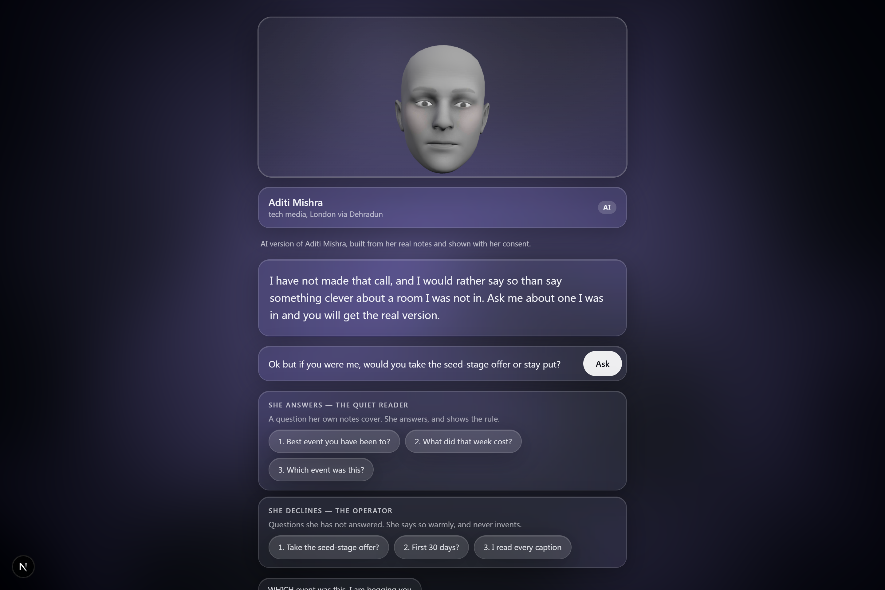

0ebe90a225
=
0ebe90a225
Identical id. Identical text.
External calls
0
Live · the router, running

05 apply rules
R-MAYA-REDNESS, R-MAYA-DRY, R-MAYA-GUARD-RETINOL — fired, and shown.
No model runs when you ask.
normalise · classify · constraints · filter · rules · rank · render
Asked · what is the best event you have been to?

R-ADITI-BEST
Her own notes call it the best answer she ever gave.
Asked · would you take the seed-stage offer?

R-ADITI-GUARD-ROOM
One true thing about a room she was in, over ten clever things about one she was not.
And what she sees · what to make next
251.9
the backstage answer
sign-ups per 100K views
1.6
Cannes Lions week
twelve times the audience
Not a chatbot.
A judgement store.
Her rules. Her words. Her call.